《追色手记07》学习资料
韩国摄影师 hello nana 胶片感仿色：从风格拆解到 Lightroom 实操
视频标题 | 【追色手记07】韩国摄影师hello nana仿色教程来了！AI摄影/胶片摄影你选哪个？ |
作者 | 摄影师聿铭 |
时长 | 约 11 分 19 秒 |
来源 | https://www.bilibili.com/video/BV1WP411Z7s3/ |
整理日期 | 2026-05-22 |
说明本文根据视频音频转写、画面截取与内容校对整理，保留学习所需的方法、步骤和关键截图，不包含逐字稿。
hello nana 作品参考截图
以下为视频中展示的 hello nana 作品和分析画面截图，用来观察日常人像、红润肤色、饱和绿色、胶片直方图与风格总结。它们是视频截图，可能保留字幕、直方图或标注。
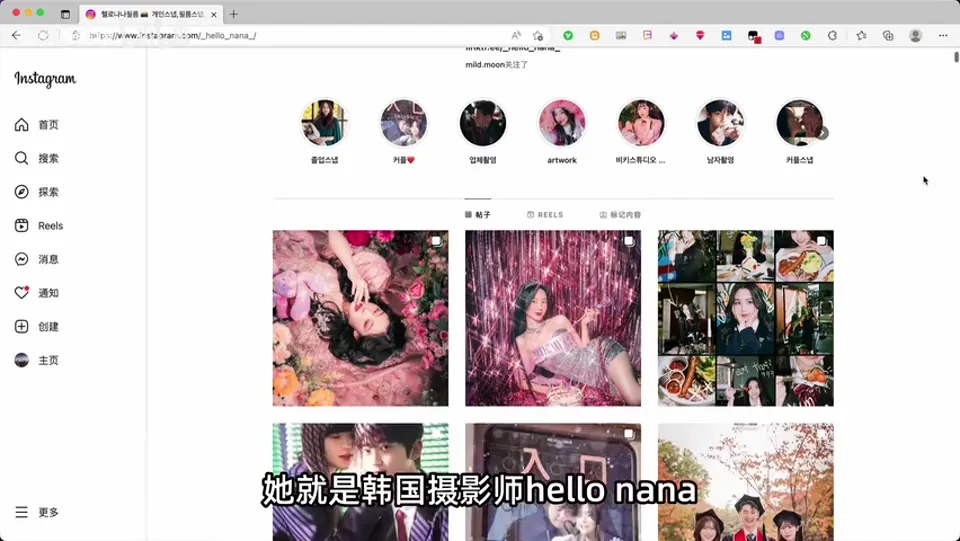 账号页面：整体视觉风格 | 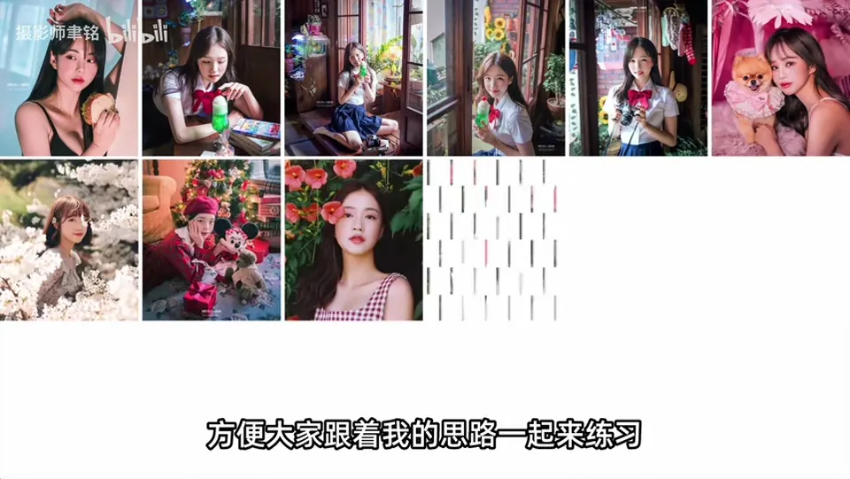 作品拼图：红、绿、胶片感 |
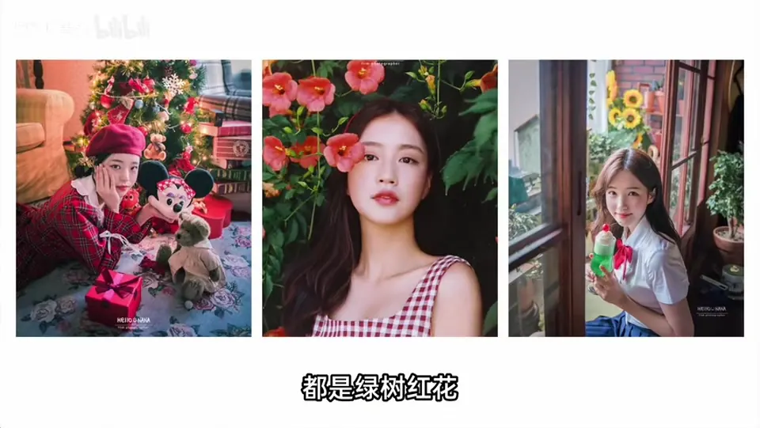 日常场景：红花与生活感 | 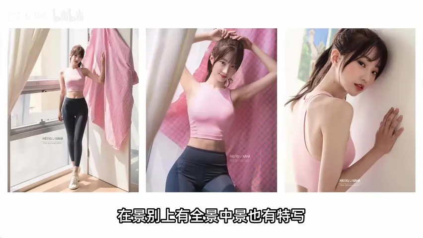 窗边系列：柔和与情绪 |
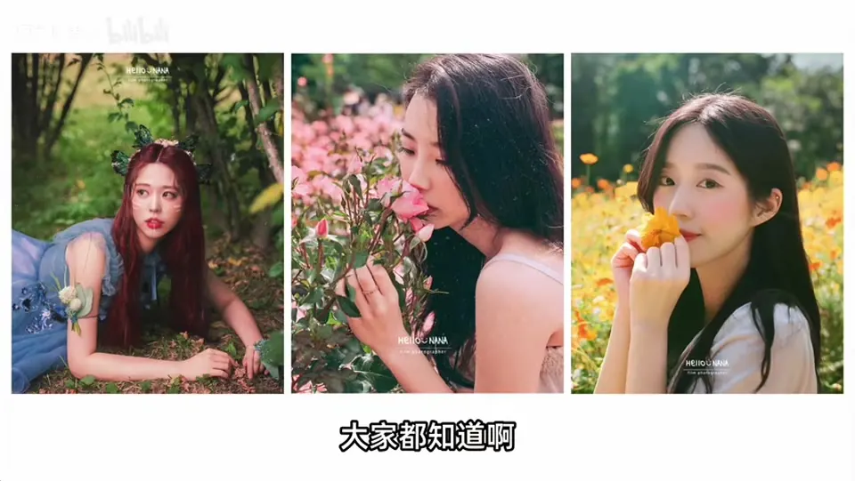 绿色环境中的人像 |
直方图饱满，中高调为主 |
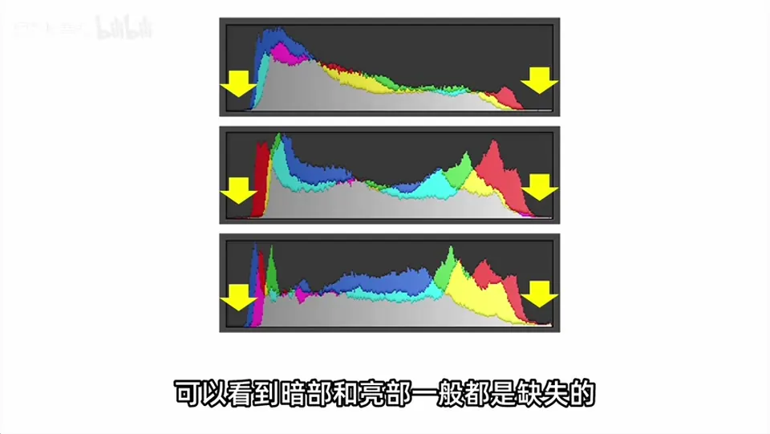 黑白端缺失：胶片特征 | 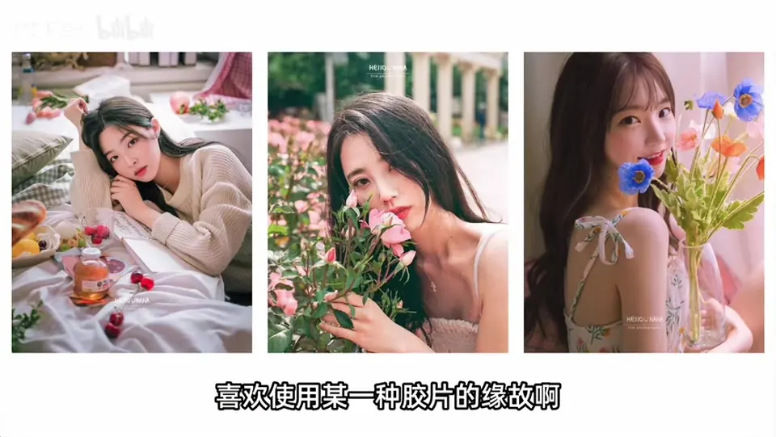 红润肤色与绿色背景 |
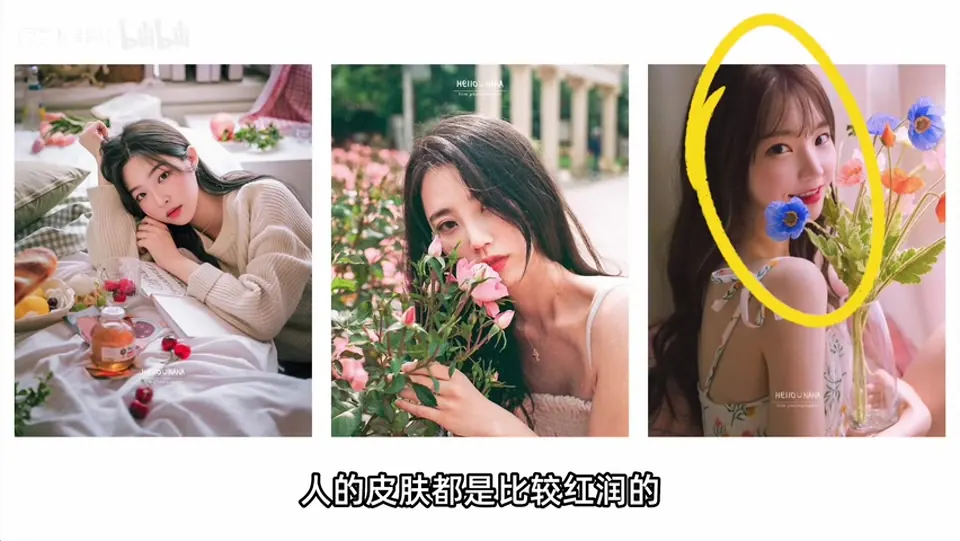 肤色偏红的观察点 | 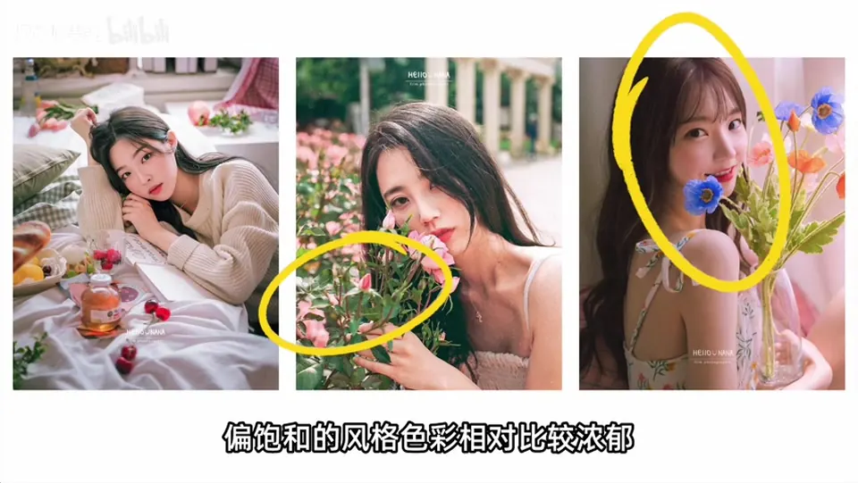 绿色饱和、浓郁 |
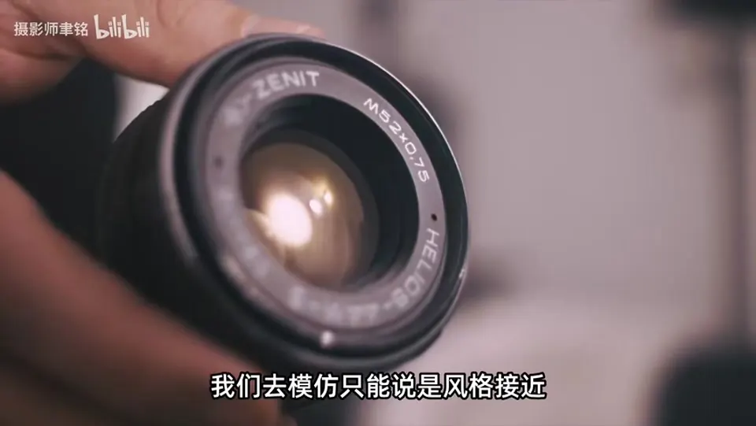 胶片相机：风格来源 | 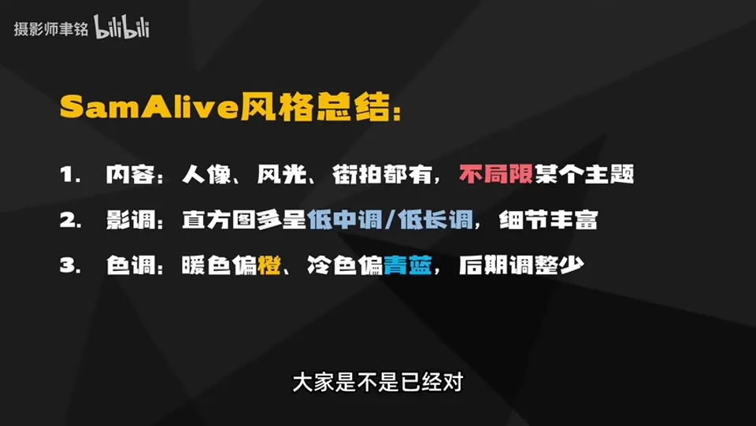 风格总结：内容、影调、色调 |
一页速览
风格核心 | hello nana 的照片强调胶片质感、日常女生人像、浓厚情绪表达；仿色重点不是复制胶片，而是接近它的影调、色调和质感。 |
内容特点 | 以女生人像为主，背景常是绿树、红花、窗边等日常场景；景别有全景、中景和特写，生活感强。 |
影调特点 | 直方图饱满，以中调和高调为主；暗部和亮部常有缺失，没有死黑死白，形成灰灰的胶片质感。 |
色调特点 | 整体偏红，肤色红润；绿色植物更饱和、更浓郁，是画面情绪的重要来源。 |
实操顺序 | 基础面板先降数码锐利感，校准用“右右左”建立红橙基调，曲线做低头白尾 S 型，HSL 修肤色和绿色，最后加分级、颗粒和局部蒙版。 |
学习目标
能把 hello nana 风格拆成内容、影调、色调、质感四个观察层次。
理解胶片质感中的“黑白端缺失”和“灰灰的质感”如何由曲线塑造。
掌握相机校准“右右左”的快速起手式，以及它对红橙肤色的影响。
能用 HSL 分别控制红色、橙色肤色、黄色阳光、绿色植物和蓝色衣物。
能用颜色分级、颗粒和局部蒙版完成最后的胶片氛围与局部平衡。
核心方法：四层拆解
维度 | 观察重点 | 本片结论 |
内容 | 主体、场景、景别和情绪。 | 女生人像为主，绿树红花等日常场景，生活感强，景别丰富，情绪浓厚。 |
影调 | 亮度分布、直方图、黑白端。 | 直方图饱满，中调和高调为主；暗部亮部缺失，避免死黑死白。 |
色调 | 肤色、植物、整体偏色。 | 画面整体偏红，肤色红润；绿色植物饱和、浓郁。 |
质感 | 锐利度、颗粒、局部细节。 | 降低纹理和清晰度减弱数码感，加入颗粒，并用蒙版修正脸、树叶和手臂。 |
Lightroom 实操流程
基础白平衡画面偏黄时略降色温；色调向右，也就是往洋红方向推，让整体更接近 hello nana 偏红的照片倾向。
基础影调压低高光和白色色阶，提亮阴影和黑色色阶，找回细节，为后续曲线和颜色调整留空间。
降低数码感纹理和清晰度稍微降低，让画面不那么锐利，变得朦胧、柔和，弱化数码相机味道。
相机校准按“右右左”起手：红原色向右、绿原色向右、蓝原色向左。这样红橙色更浓郁，肤色更红润。
明度曲线做“低头白尾”的 S 型曲线：左侧暗部往上抬，让暗部变灰；右侧高光往下压，让高光变成哑光质感。
RGB 曲线红曲线 S 型让暗部偏青、高光偏红；绿曲线和蓝曲线继续 S 型平衡，让光影和色彩都更丰富。
HSL 红橙红色色相微向橙，饱和度降低，避免太艳；橙色控制肤色，色相往右让皮肤略黄，饱和度降低，让肤色自然。
HSL 背景黄色主要是阳光照到树叶的颜色，降低饱和度；绿色色相往右，让绿色更绿；蓝色主要影响衣服，饱和度和明亮度略降。
颜色分级阴影常规加入一点蓝色，高光加入一点红色，只需要给出倾向，不要过量。
颗粒效果增加颗粒模拟胶片质感；颗粒可以稍微多给一些，但要看画面是否还能保持人物清晰。
局部蒙版用径向渐变提亮脸部阴影，用线性渐变提亮左侧树叶，用画笔压低手臂高光和白色色阶，并适度提高饱和度协调肤色。
工具速查表
工具 | 用途 | 本片操作 | 注意点 |
基础面板 | 建立可调基础 | 降色温、加洋红，压高光白色，提阴影黑色。 | 基础面板解决大方向，不追求一步到位。 |
纹理/清晰度 | 弱化数码锐利感 | 两者略降，画面更柔和。 | 过低会糊，人物边缘仍需保留。 |
校准 | 建立全局红橙基调 | 右右左，增强红橙与肤色红润。 | 这是起手式，不是固定公式。 |
明度曲线 | 制造胶片黑白端 | 低头白尾 S 型，暗部变灰，高光哑光。 | 抬黑过量会灰脏，压白过量会没精神。 |
RGB 曲线 | 丰富色彩层次 | 三条颜色曲线都做 S 型并联动观察。 | 单条曲线会偏色，要调完三条再判断。 |
HSL | 修正具体颜色 | 红橙修肤色，黄绿修植物，蓝色修衣物。 | 肤色和绿色是关键，其他颜色看画面微调。 |
颜色分级 | 补冷暖倾向 | 阴影加蓝，高光加红。 | 只给轻微倾向，过量会假。 |
效果/颗粒 | 模拟胶片质感 | 增加颗粒。 | 颗粒是质感，不是遮丑；不要掩盖主体细节。 |
蒙版 | 解决局部问题 | 提脸、提树叶、压手臂高光。 | 最终质感常常取决于这些局部修正。 |
关键截图与讲解
图 01 | 01:14 | hello nana 账号与风格入口。
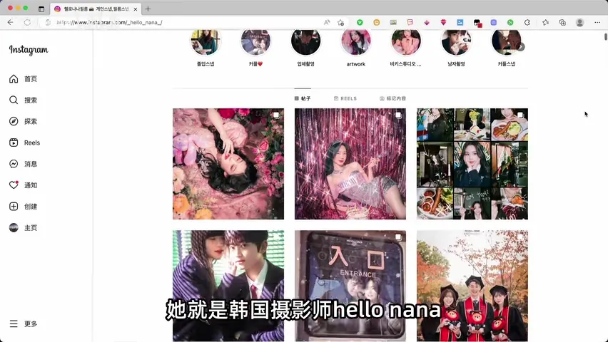
学习要点先看整体作品面貌，再进入具体拆解。
图 02 | 01:57 | 内容、影调、色调三要素。
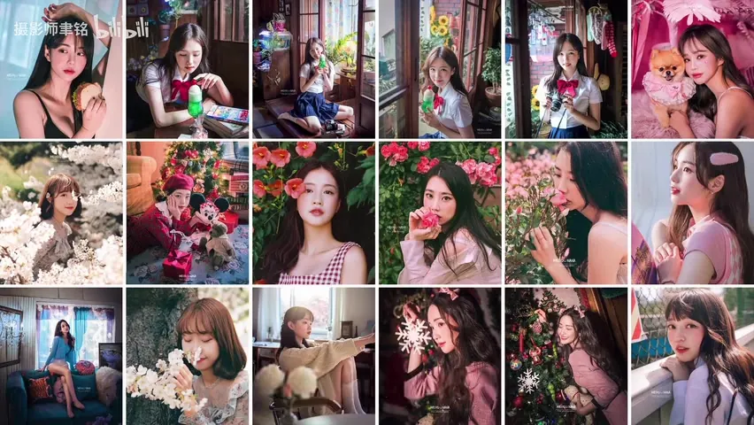
学习要点本片按这三项拆解 hello nana 风格。
图 03 | 02:11 | 内容：日常女生人像。
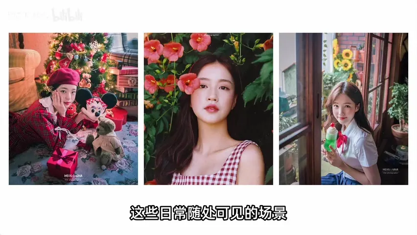
学习要点背景多为绿树红花等常见场景，生活感强。
图 04 | 02:39 | 影调：直方图饱满。
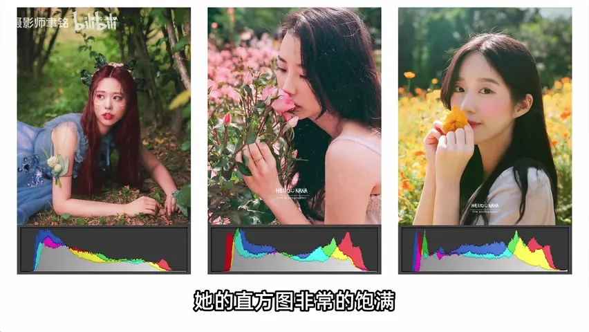
学习要点中调和高调为主，画面亮度适中或略亮。
图 05 | 02:55 | 胶片特征：暗部亮部缺失。
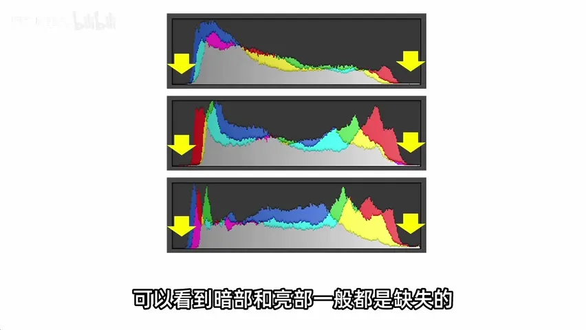
学习要点没有死黑死白，形成灰灰的胶片质感。
图 06 | 03:18 | 色调：红润肤色与饱和绿色。
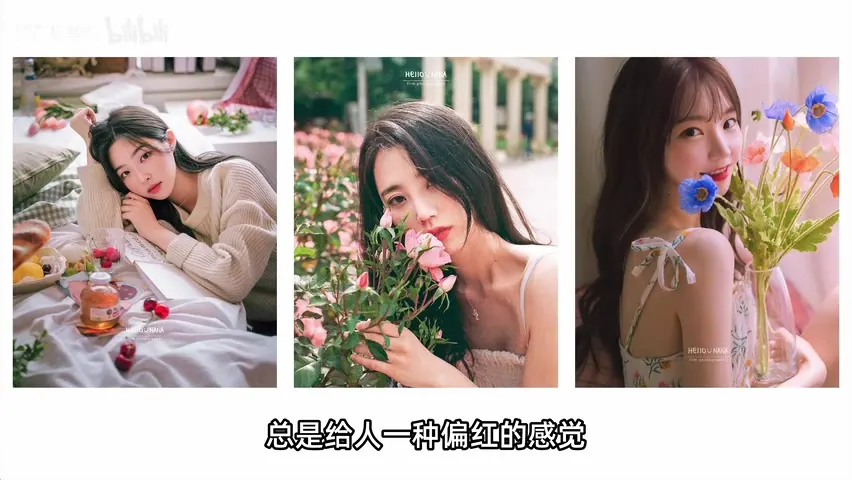
学习要点整体偏红，植物更浓郁，是仿色重点。
图 07 | 04:17 | 进入 Lightroom 实操。
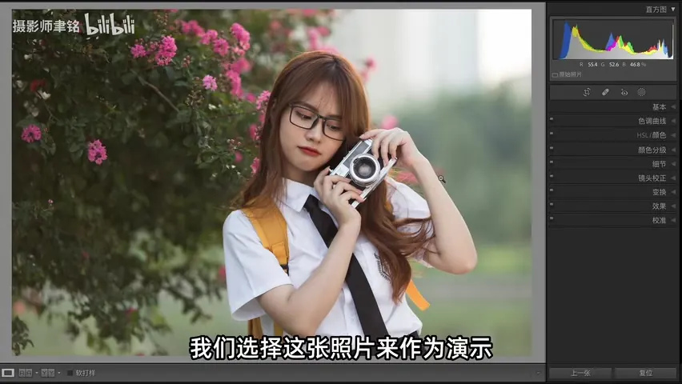
学习要点选择一张绿树红花环境中的女生人像作为演示。
图 08 | 04:30 | 基础面板：白平衡和影调。
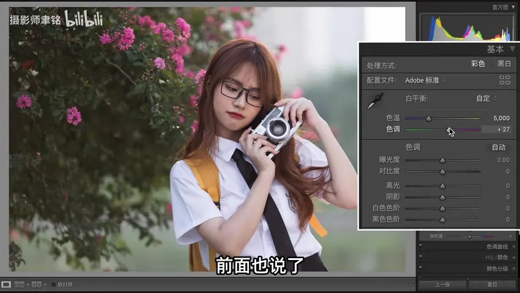
学习要点降色温、加洋红，压高光白色，提阴影黑色。
图 09 | 04:48 | 降低纹理和清晰度。
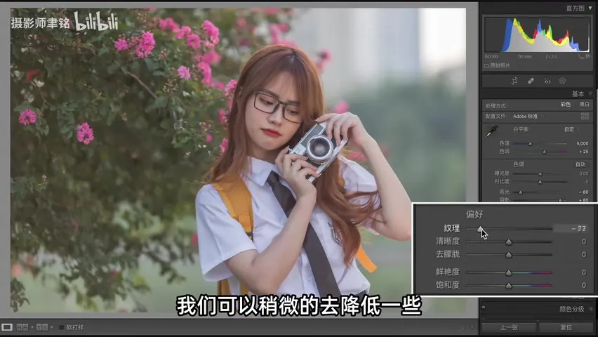
学习要点让画面更朦胧柔和，削弱数码锐利感。
图 10 | 05:12 | 校准：右右左。
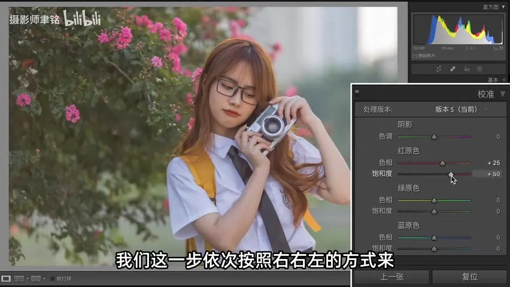
学习要点快速让红橙更浓郁、肤色更红润。
图 11 | 05:36 | 明度曲线：低头白尾。
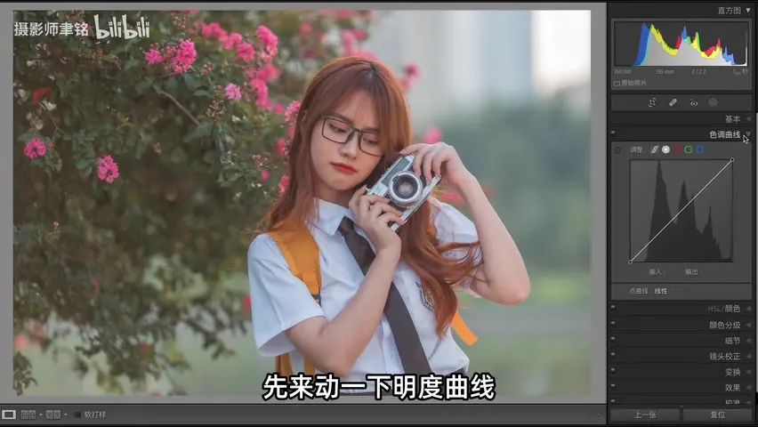
学习要点抬暗部、压高光，制造灰感和哑光高光。
图 12 | 06:04 | 红曲线：暗部偏青，高光偏红。
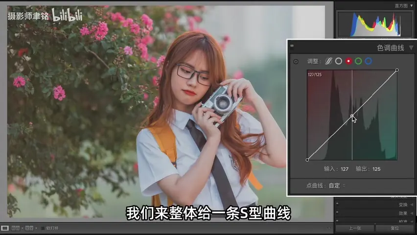
学习要点先打破平衡，后面用绿蓝曲线拉回来。
图 13 | 06:32 | 绿曲线：综合画面颜色。
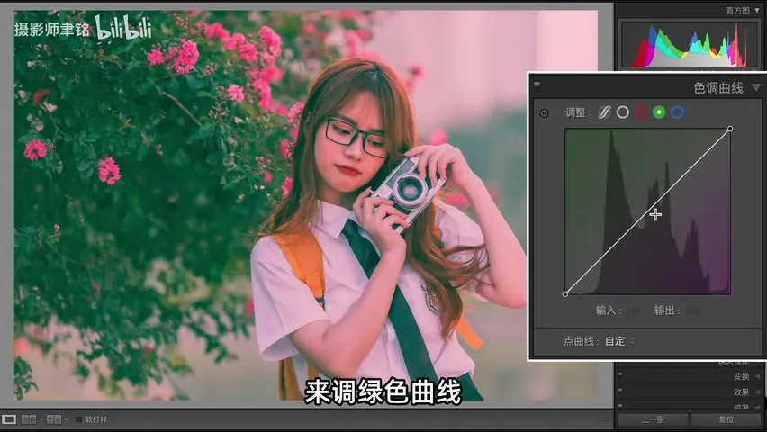
学习要点继续做 S 型，让色彩不再怪异。
图 14 | 06:46 | 蓝曲线：最终平衡。
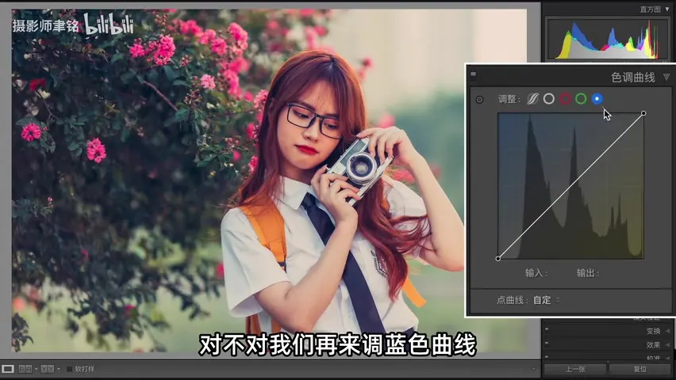
学习要点边观察边调整，形成更丰富的光影和颜色。
图 15 | 07:16 | HSL 红色：减弱艳丽。
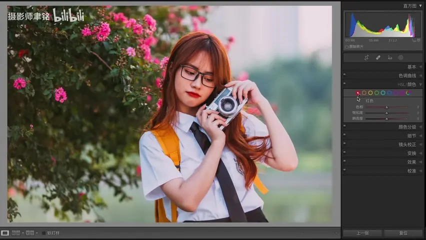
学习要点红色微偏橙，饱和度降低，避免口红和花色太抢。
图 16 | 07:36 | HSL 橙色：修肤色。

学习要点橙色影响肤色，调完皮肤会自然很多。
图 17 | 08:07 | HSL 绿色：修背景。
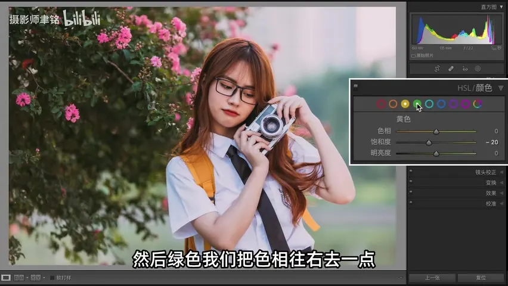
学习要点降低黄色饱和，绿色往右，让树叶更绿更干净。
图 18 | 08:40 | 颜色分级：阴影蓝、高光红。
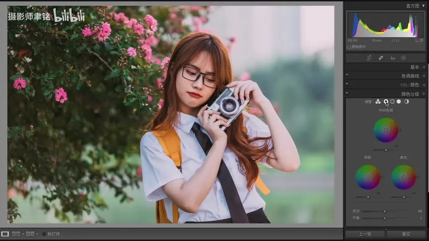
学习要点补充胶片式冷暖倾向，但只需轻微。
图 19 | 09:12 | 颗粒：模拟胶片质感。
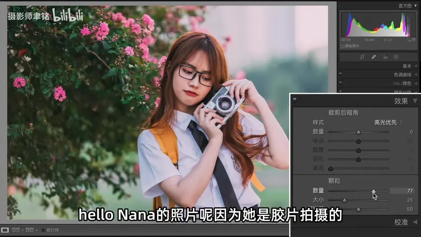
学习要点增加画面颗粒，让胶片感更明显。
图 20 | 09:40 | 局部：提亮脸部。
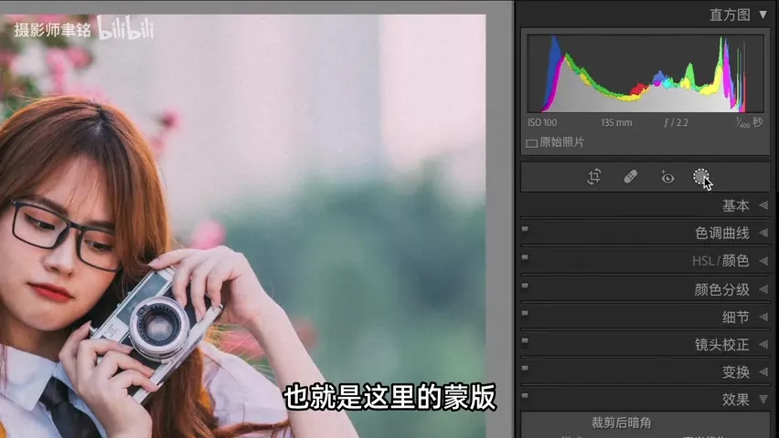
学习要点径向渐变提亮脸部阴影，让主体更清楚。
图 21 | 09:55 | 局部：提亮树叶。
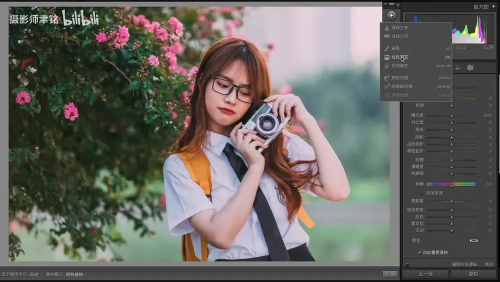
学习要点线性渐变处理左侧树叶，减弱黑压压的感觉。
图 22 | 10:08 | 局部：压手臂高光。
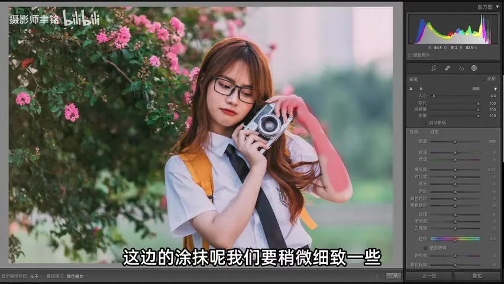
学习要点画笔压高光和白色色阶，避免手臂过曝。
图 23 | 10:39 | 最终对比。
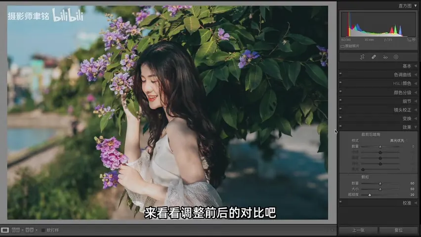
学习要点胶片感更浓，整体接近 hello nana 的方向。
练习任务
找一张绿树红花环境中的女生人像，先写下内容、影调、色调三项观察结果。
只用基础面板完成第一版降色温、加洋红、压高光白色、提阴影黑色、降低纹理清晰度。
用校准“右右左”快速建立红橙基调，再观察肤色是否过红或过黄。
用明度曲线做低头白尾 S 型，再用 RGB 曲线建立暗部青、高光红的色彩层次。
用 HSL 修红、橙、黄、绿、蓝五类颜色，尤其确保肤色和绿色植物自然。
加少量颜色分级和颗粒，最后用蒙版分别处理脸部、背景树叶和过亮手臂。
复盘清单
检查项 | 通过标准 |
内容 | 是日常女生人像，场景有生活感，背景元素能承载红绿胶片感。 |
影调 | 直方图饱满，中高调为主；黑白端不死顶，画面没有硬黑硬白。 |
肤色 | 红润但不过度发红，橙色自然，不脏不灰。 |
绿色 | 植物颜色浓郁且偏绿，不黄、不脏、不荧光。 |
曲线 | 暗部灰、高光哑光，RGB 曲线让色彩更丰富而不是混乱。 |
颗粒 | 有胶片颗粒感，但主体五官和关键细节仍清楚。 |
局部 | 脸部亮度、树叶亮度、手臂高光之间协调。 |
仿色判断 | 风格接近即可，不追求数码照片与胶片照片完全一样。 |
时间轴速查
时间 | 模块 | 重点 |
00:23-01:45 | 课程引入 | AI 摄影背景、胶片回潮、hello nana 风格入口。 |
01:45-02:31 | 内容分析 | 女生人像、绿树红花、生活感、丰富景别和情绪。 |
02:31-03:06 | 影调分析 | 直方图饱满，中高调为主，黑白端缺失。 |
03:08-04:12 | 色调分析 | 整体偏红、肤色红润、绿色植物饱和浓郁。 |
04:15-05:02 | 基础面板 | 降色温、加洋红、压高光白色、提阴影黑色、降纹理清晰度。 |
05:03-05:32 | 相机校准 | 右右左，增强红橙和肤色红润。 |
05:35-07:12 | 曲线 | 明度曲线低头白尾，RGB 曲线做 S 型并平衡颜色。 |
07:12-08:33 | HSL | 红橙修肤色，黄绿修树叶，蓝色修衣物。 |
08:37-09:23 | 分级与颗粒 | 阴影加蓝，高光加红，增加胶片颗粒。 |
09:23-10:37 | 局部调整 | 脸部、树叶、手臂分别用蒙版修正。 |
10:37-11:10 | 总结 | 前后对比，强调自己练习素材和预设。 |
全部图片
本页共保留 35 张来自 Word 的图片。上方正文中已按文档顺序展示，这里作为总览索引。